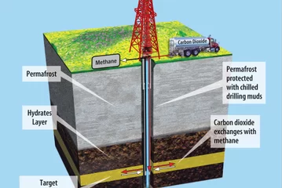
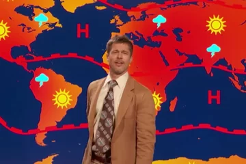

'Flammable Ice': Harvesting Could Spell Trouble for the Climate
June 18, 2017 | Article
Vast troves of an energy source called methane locked deep beneath the ocean floor could be harvested. But doing so would worsen climate change, several experts say.

'There Is No Future': Brad Pitt Gives Doomsday Forecast in Comedy Skit
June 09, 2017 | Article
Brad Pitt's latest role is a doomsday weatherman explaining climate change.
After Life of Adventure, Attenborough Regrets Missed Family Time
June 09, 2017 | Article
Sir David Attenborough has traveled around the world and back, but despite his countless wildlife adventures and exploits in the natural world, said he does have one major regret.